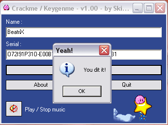
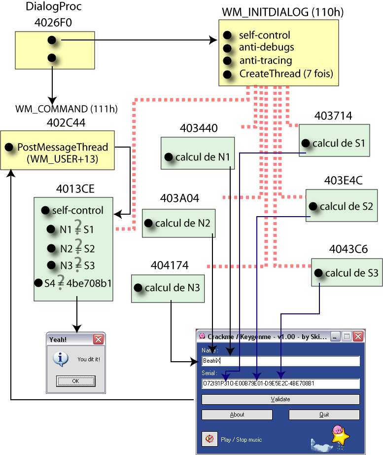
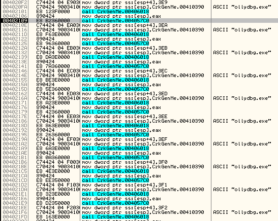
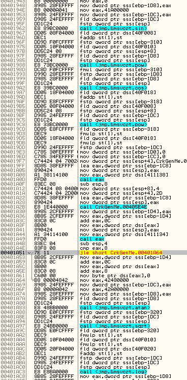

Date de publication : vendredi 30 juin 2006
Auteur : BeatriX
1.Introduction
CrkGenMe.exe est un binaire codé en C++ par skirby. Le programme demande un nom et un serial. En cas de saisie correcte, nous avons droit à ceci :

Je vais m'efforcer de détailler mon approche pour keygenner ce binaire et conjointement, j'ajouterai des infos en matière de coding. La partie patching ne sera pas du tout traitée.
Dans les grandes lignes, CrkGenMe utilise un système que certains appèlent un "WatchDog", c'est-à-dire qu'il lance plusieurs threads qui se surveillent et qui oeuvrent ensemble à la vérification du serial. Si l'un d'eux est défaillant, le programme s'arrête ou se bloque. Si on tente de les modifier, de les arrêter ou de les debugguer, le programme s'arrête également. La difficulté d'analyse réside donc dans la compréhension du rôle de chaque thread sans oublier que le système tente tant bien que mal de nous en empêcher.
Comme si ceci ne suffisait pas, l'auteur a ajouté du junkcode dans les threads afin de dérouter d'avantage le reverseur.
2. A la pêche aux infos !
Commençons par pister le moindre indice qui pourrait nous faire gagner du temps. Lançons un Snooper de PE sur la cible (et pourquoi pas snoopy 1.1 tiens) et voyons ce que nous pouvons récupérer d'utile :
45A1D4 "main.cpp" 45A56A "threads.cpp" 45A72C "ApiHook.cpp" 45A9D8 "md5.cpp" 45AB76 "crc32.cpp" 45AC72 "JunkCode.cpp"
Donc, là, au moins, vous ne pouvez pas dire que vous n'êtes pas au courant : il y a des threads, du hash md5, du crc32, du hooking d'apis et du junkcode... un esprit averti en vaut 2 !
Entrons maintenant dans le vif du sujet en nous enfonçant un peu plus profondément dans les entrailles de la bête.
3. Aperçu général du keygenme

La phase de réveil
Au démarrage du crackme, nous pouvons voir une simple DialogBox se mettre en place. La DialogProc va alors recevoir un message d'initialisation WM_INITDIALOG et va effectuer les tâches suivantes :
- 1. Techniques anti-debug : Le crackme va tenter de détecter en scannant les processus en cours les principaux outils utilisés en RE : IDA - OllyDebugger - WinDbg - SoftIce. Il tente également d'utiliser la fonction classique IsDebuggerPresent.
- 2. Techniques anti-tracing : Le crackme tente également de détecter le tracing en utilisant les fonctions GetTickCount, GetSystemTime, msvcrt.time.
- 3. Lancement des Threads : Enfin, le crackme va lancer (à l'aide de CreateThread) 7 threads.
La phase de vérification
Durant la saisie des noms et serial, 6 des 7 threads s'évertuent à calculer certaines valeurs en vue de vérifier le serial. 3 de ces threads génèrent 3 nombres N1, N2 et N3 à partir du nom et les 3 autres calculent 3 autres nombres S1, S2 et S3 à partir des valeurs a1,a2,a3 du serial composite "a1-a2-a3-S4".
Si l'utilisateur appuie sur "Validate", un WM_COMMAND est envoyé à la DialogProc qui aura pour effet d'envoyer un WM_USER+13 au 7ème thread par l'intermédiaire de PostThreadMessage.
Ce 7ème thread, à la reception du WM_USER+13 va effectuer de simples comparaisons et va afficher un succès si N1=S1, N2=S2, N3=S3 et S4=0x4BE708B1.
Je précise ici que le thread de test s'auto-contrôle afin d'éviter toute tentative de BreakPoints. En fait, le thread patche son propre code afin d'écraser toute modification. La routine exécutée après reception du message WM_INITDIALOG fait de même.
4. Recherche des failles
Je vais dès à présent expliquer la méthode que j'ai employé pour comprendre et casser ce binaire.
Phase 1 : démarrage du binaire
Je commence donc par lancer le binaire en tentant de logguer les appels aux fonctions de l'API. J'obtiens ceci :
=========> __set_app_type =========> SetUnhandledExceptionFilter : 00401000 =========> __getmainargs =========> __p__fmode =========> __p__environ =========> FindAtomA =========> malloc =========> AddAtom =========> GetAtomNameA =========> atexit =========> GetCommandLineA : "C:\CrkGenMe.exe" =========> GetStartupInfoA =========> GetModuleHandleA : Main =========> DialogBoxParamA : DialogProc en 4026F0
On voit clairement ici un démarrage d'un programme C++ mais rien ne se passe avant la DialogBox.
Phase 2 : Initialisation de la DialogBox.
La première phase réellement importante débute donc dans la routine exécutée si WM_INIT est reçu par la DialogProc. Les ennuis commencent en 401E28. Les antidebugs les plus dangereux sont ceux que l'on peut voir en 4020F2 :

En 4057C0, le programme crée un SnapShot des processus et recherche le module dont le nom est passé en paramètre. Il suffit de placer un retn à cette adresse et d'enregistrer la modification pour rendre ce trick inoffensif. A partir de là, on peut lancer le crackme sans aucun souci sous OllyDebugger.
Phase 3 : Validation du serial
On remarque que si on actionne le bouton Validate, un message WM_USER+13 est envoyé au thread commençant en 4013CE.
Phase 4 : Analyse du thread 4013CE
On repère facilement le thread qui reçoit le message WM_USER+13 envoyé par la DialogProc. Bizarrement, quand on pose un BP sur la routine qui doit être exécutée à la reception du message...rien ne se passe, comme si le thread n'avait pas reçu ce message. Le BreakPoint posé est donc détecté ou écrasé !
Je regarde à deux fois le début de ce thread et je constate qu'il se patche lui-même par un WriteProcessMemory. Qu'à cela ne tienne, on fait un retn 14h directement à l'entrée du code de cette fonction et le problème est réglé, le thread ne patche plus rien...et d'ailleurs, plus personne ne patche quoique ce soit. D'ailleurs, après analyse du binaire, on constate qu'un Timer se charge aussi de patcher ce thread toutes les 5 secondes. Appeler une fonction de l'API uniquement dans un but d'anti-debug n'est pas une bonne idée. Il faut que cette fonction ait d'autres usages indispensables afin d'éviter un patch brutal et facile comme celui-ci ou il faut tester le retour de la fonction ou tester carrément la fonction elle-même.
Phase 5 : Attaque du thread
Nous arrivons ici au noeud du problème. Il s'agit selon moi du point où tout bascule en ce qui concerne l'analyse de ce crackme. Avant, nous sommes dans l'obscurité...après, tout devient clair en quelques minutes. j'ai donc voulu tracer ce thread et voir où il me menait. J'ai donc tracé à l'aveugle sans trop savoir où je pouvait bien tomber.J'ai surtout essayé de tracer le plus longtemps possible en modifiant les flags si un saut tentait de me faire sortir de la routine du thread et ...quelle ne fut pas ma surprise ! le seul saut qui semble modifier quelque chose est celui situé en 401D40 :
401D39 cmp dword ptr [ebp-2C], 1010101 401D40 jnz 401DAB
Si nous empêchons ce saut, nous tombons sur une MessageBox qui nous affiche le message de succès.
Nous y sommes donc ! le dword stocké en [ebp-2C] doit être égal à 0x1010101. A partir de là, tout va très vite : on remonte dans le code du thread à la recherche d'opérations sur [ebp-2C] et en isolant les quelques lignes utiles, on obtient :
40147D mov dword ptr [ebp-2C], 0 4015B3 or dword ptr [ebp-2C], 1000000h 401794 or dword ptr [ebp-2C], 10000h 40193D or dword ptr [ebp-2C], 100h 401CE7 or dword ptr [ebp-2C], 1
Ces lignes sont exécutées uniquement si certaines chaines sont égales. On remarque donc que de nombreux calculs présents dans la routine du thread ne servent à rien, et là, on se rappelle de JunkCode.cpp. L'auteur a donc essayé de brouiller les pistes. Voici un exemple de ce genre d'astuce :

Nous voyons donc des appels à des fonctions mathématiques comme pow, cos, sin, atan, sqrt, log. Quoiqu'il arrive, des appels aussi nombreux à des fonctions aussi tordues auraient du nous mettre la puce à l'oreille...pas évident voire impossible de reverser des équations non linéaires avec autant de fonctions !
Pour l'occasion, Skirby a eu la gentillesse de me fournir le code source de ce genre de junk dont voici un extrait :
#define JUNKCODE6 { \
float jk1 = 0, jk2 = 20; \
jk1 = (sin(jk2) + 5) * pow(jk1, 3); \
jk2 = (cos(jk1) + 10) * pow(jk2, 5) * 10; \
jk1 * 12345 == jk2 * 67890; \
\
}
Phase 6 : Le coup de grâce.
Je vais alors jeter un coup d'oeil du côté des 6 threads restants et je constate que les fameuses chaines sont générées par ces derniers. Il s'agit en l'occurence de N1, N2, N3, S1, S2 et S3. Nous n'avons plus qu'à comprendre comment sont générés ces fameux nombres et à coder un keygen mais à ce stade, nous avons compris l'esprit du défi.
Phase 7 : Le parcours de santé.
Pour finir, il ne nous reste donc plus qu'à comprendre les calculs effectués pour générer les 6 nombres ci-dessus. Dans un souci d'économie ( en matière d'attaques de binaires, il faut toujours viser le plus efficace ), nous n'allons pas étudier la génération des nombres N1, N2 et N3. En effet, dès que nous saisissons un NOM, le crackme lui-même génère ces fameux nombres...il fait donc la moitié du travail à notre place. Si nous lui volons ces 3 nombres, qui sont donc égaux à S1, S2, S3 il ne nous reste plus qu'à comprendre comment sont calculés ces 3 derniers à partir du SERIAL.
Copyright (C)- FRET (2006)